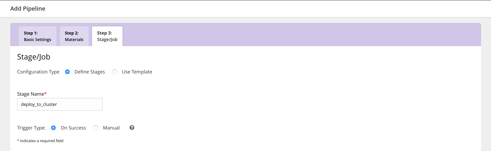

Create a pipeline to deploy the published artifact
In this section, we’ll learn to design a deployment pipeline to deploy to Kubernetes. After you’ve designed and run the build pipeline, you’ll see that for every successful build, a new image gets created with a new tag. To create a pipeline to deploy the published artifact, follow these steps:
Quick Links
Deploy application to Kubernetes
Navigate to Admin -> Pipelines and click on
Create a pipeline within this group.Specify the pipeline name as
deploy_app_to_cluster.
Specify a git material with URL
https://github.com/gocd-demo/node-bulletin-board.git. The deploy scripts are present in the same repository as the application source.
Create a stage named
deploy_to_cluster.
Create the initial job
deploy_to_cluster. The initial task argument is./app-deployment.sh
Introduce the pipeline
test_applicationas a material calledtest.Tip: Choose the option ‘Pipeline’ in the ‘Add Material’ dropdown under the Materials tab.
We want to add the earlier pipeline to build the app as a dependency as we want this pipeline to run only after the docker image is built.

Add the
NAMESPACE,DOCKERHUB_USERNAMEandKUBE_TOKENenvironment variables.The
KUBE_TOKENsecure environment variable is needed when we make a Kubernetes API requests to create deployments, service and ingress. For convenience, you can use the secret associated with the service account we used to start theTillerpod:kube-system:default.Note: The KUBE_TOKEN environment variable must be configured as a secure variable as shown in the image. This token should not be exposed.
kubectl describe sa default --namespace kube-system // to obtain the secret name kubectl describe secrets <token_name> --namespace kube-system
Configure a
Fetch Artifact Taskto fetch the docker image name. The docker image is the artifact that was published in upstreambuild_and_publish_image.Choose Artifact Type
ExternalSpecify the pipeline as
build_and_publish_image/test_application.Specify the stage as
build_and_publish_image.Specify the job as
build_and_publish_image.Specify the artifact id configured in
build_and_publish_image. In the earlier section, we configured the artifact id asbulletin-board.When the plugin view appears for
Artifact plugin for docker, checkSkip Image Pulling. We want to reference the image in our script to deploy onto the Kubernetes cluster, but we do not want to pull the image on the agent itself.

Reorder the tasks as shown as we want to first fetch the image before running any tests.

Associate job with the elastic profile
Quick links
We have created a sample elastic profile demo-app for the helm release by default. Before associating elastic profile to a job, you’ll need to verify that the elastic profile and plugin settings are set up.
Step 1: Verify elastic profile
Navigate to Admin > Elastic Agent Profiles

You should be able to see demo-app in this.
If the elastic profile does not exist or if you would like to create your own, refer to this section
Step 2: Verify Kubernetes elastic agent plugin
Navigate to Admin > Plugins and click on Status Report

If you’re able to see a screen similar to the screenshot above, then the plugin has been configured.
If the plugin settings have not been configured, refer to this section
Step 3: Configure elastic profile ID for the job
Before you can run the pipeline, you’ll need to associate an elastic profile ID with the job to be executed. To do this, go to the Job Settings tab of the specific job.
Tip: Use the tree on the left to navigate to the job deploy_to_cluster. Once you’re here, you can associate the profile ID under the Job Settings tab.
Once you’ve associated the job to the profile, you’re ready to run the pipeline.

Run your pipeline
Now that the deploy pipeline is configured, we can run it and verify that the deployment has been completed.
To run the pipeline, unpause the pipeline in the GoCD dashboard. The changes in the source git repository get picked up automatically when the pipeline is triggered.
View the value stream map
You can view the value stream map of your deployment by clicking on the ‘VSM’ link of the deploy_app_to_cluster pipeline in the Dashboard.

Access your application
Once the pipeline has run successfully, go to http://<ingress-ip>/bulletin-board to see your deployed sample application.
Get the new ingress IP address for the application by doing
- For Minikube,
minikube ip- For others,
echo "http://$(kubectl get ingress bulletin-board-ingress --namespace $NAMESPACE -o jsonpath="{.status.loadBalancer.ingress[0]['ip']}")"
 Edit this page
Edit this page